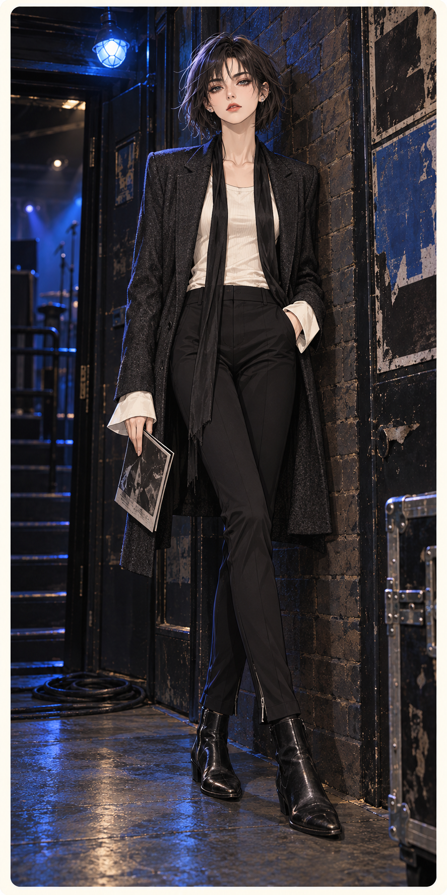
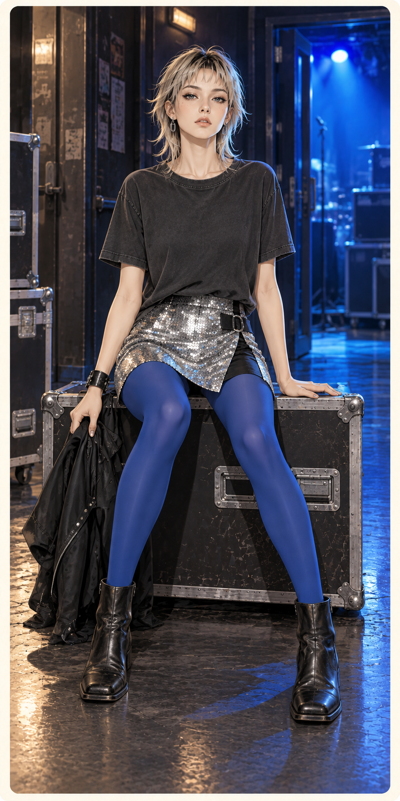
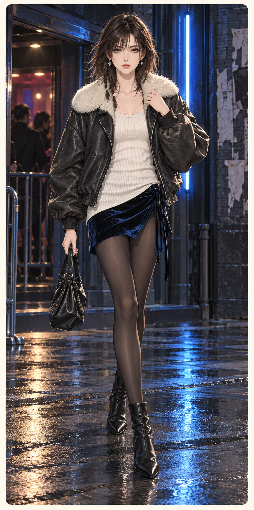

S02-F01最后一首安可
One Last Encore
研究：Dior Homme / Hedi Slimane
2005 秋冬
已核查全身构图、服装层次与组内气氛；实际姿态和细节以成图为准。
逐件品牌参考与改造
长袖口衬衫与素T层次原创搭配
为正装增加不规整露层。
细围巾、旧皮短靴与折叠节目单原创搭配
以音乐现场语境完成造型，不复刻乐队标识。

S02-F02闪光灯余温
After the Flash
研究：American Apparel
Fine Jersey 产品结构研究；非历史广告复刻
已核查全身构图、服装层次与组内气氛；实际姿态和细节以成图为准。
逐件品牌参考与改造
钴蓝袜、方头短靴与腕带原创搭配
用亮面／旧棉／饱和袜色形成对照。

S02-F03借来的凌晨
Borrowed After Midnight
研究：Topshop Unique
2016 秋冬；后期造型比较，非亚文化起源依据
已核查全身构图、服装层次与组内气氛；实际姿态和细节以成图为准。
逐件品牌参考与改造
长罗纹背心与系结绒面短裙原创搭配
用长内层与短裙错位，裙结承担闭合。
黑袜、旧短靴和软包原创搭配
围绕散场行走设计，避免叠加舞台符号。